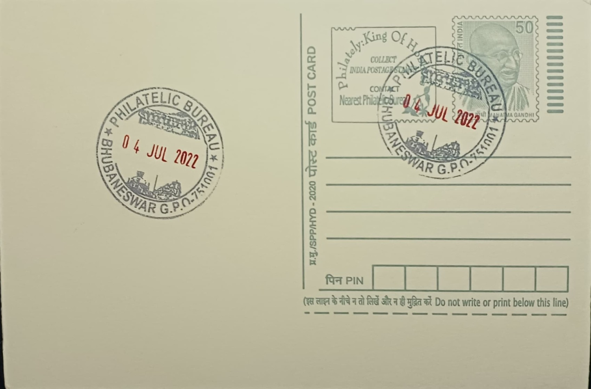

Khandagiri Udayagiri Caves, Dhauligiri Stupa & Lingraj Temple
ଖଣ୍ଡଗିରି ଉଦୟଗିରି ଗୁମ୍ଫା, ଧଉଳିଗିରି ସ୍ତୂପ ଓ ଲିଙ୍ଗରାଜ ମନ୍ଦିର


The twin hills of Khandagiri and Udayagiri, just west of Bhubaneswar, were identified in ancient inscriptions as Kumari Parvata, and their names reflect simple geography: Udayagiri, the "hill of sunrise," and Khandagiri, the "broken hill." Jain tradition holds that the site was consecrated as a monastic retreat after the Kalinga Jina, an image taken away by the Nanda ruler Mahapadmananda, was recovered and restored to the region by King Kharavela, an event he himself records with evident pride. The caves thus carry a layered origin story that ties religious restoration to royal legitimacy rather than to a single founding legend alone.
As a rock-cut monastic complex, the site holds particular significance as one of the earliest and best-preserved examples of Jain architecture in eastern India, with Udayagiri containing eighteen excavated caves and Khandagiri fifteen, most cut as plain cells for ascetics rather than for elaborate worship. Its historical weight rests chiefly on the Hathigumpha cave, whose seventeen-line inscription in Kharavela's own voice is one of the few extended epigraphic records of a Kalinga king, detailing the first thirteen years of his reign, his military campaigns, and his patronage across religious communities. The inscription, engraved high on the cavern ceiling, was first noticed by A. Sterling in 1820 and only fully deciphered by James Prinsep in 1837, making it a foundational text for reconstructing early Odishan history.
Roughly eight kilometres south of the city, on the banks of the river Daya, the Dhauli hills are traditionally identified as the ground where the Kalinga War was fought around 261 BCE, when the Mauryan emperor Ashoka subdued the independent kingdom of Kalinga. Ashoka's own rock edicts, inscribed on a mass of stone beside the path to the hilltop, describe the toll with unusual candor, citing figures of roughly one hundred thousand killed in battle and a further one hundred fifty thousand deported, alongside countless others who perished afterward. The set of inscriptions at Dhauli, comprising Rock Edicts I through X and XIV along with two separate Kalinga-specific edicts, records Ashoka's subsequent turn toward Buddhist dhamma and his stated concern, in his own words, for the welfare of all beings.
Overlooking these edicts stands the Shanti Stupa, a white dome-shaped peace pagoda built in 1972 through collaboration between the Kalinga Nippon Buddha Sangha and Japanese Buddhist organisations, making it one of several such pagodas raised across India under Nichidatsu Fujii's postwar peace movement. Its design carries five chattras, or ceremonial umbrellas, representing the five core elements of Buddhist teaching, and its base is carved with relief panels depicting scenes from the Buddha's life, including his footprints and the bodhi tree. The stupa's placement directly above the purported battlefield and beside Ashoka's own edicts creates a pointed physical juxtaposition between the violence of conquest and the renunciation that followed it.
The Lingaraja Temple, by contrast, belongs to a later and distinctly Hindu phase of the region's religious life, built mainly between about 1090 and 1104 CE under the Somavamshi, or Keshari, dynasty, with construction traditionally begun under Jajati Keshari and completed by his successors, and with further additions made later by the Ganga rulers. Standing roughly 180 feet tall overall, with its deula tower alone reaching some fifty-five metres, the temple is built in the classic four-part Kalinga plan of vimana, jagamohana, natamandira and bhoga-mandapa, each hall rising higher than the one before it, and is regarded by architectural historians as the most mature expression of that style. The temple complex, enclosed within a large compound wall, additionally shelters some 108 subsidiary shrines and remains an active site of Shiva worship administered under state temple management, drawing both pilgrims and researchers of Kalinga-era temple architecture to a single walled precinct that has functioned continuously for close to a thousand years.
| Date of Introduction | September 13, 2006 |
|---|---|
| Address | Incharge, |
| Philatelic Bureau, Bhubaneshwar GPO-PB, | |
| Khordha (dt.), Odisha - 751001. |